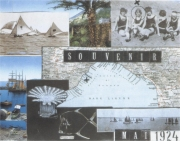

Teige: Pozdrav z cesty
Štyrský: Povodeň
|
POETISMUS
Poetismus byl výsostně českým avantgardním směrem, který roku 1923 vystřídal na půdě Devětsilu program proletářské poezie. Jeho tvůrci byli Vítězslav Nezval a Karel Teige. Poetismus měl blízko k futurismu (optimismus, nadšení pro vědu a techniku, odstranění interpunkce) a konstruktivismu (originální typografická úprava knih). Velmi ho ovlivnil Apollinaire, tvůrce polytematického Pásma, obrazových básní a asociativní metody řazení básnických obrazů.
Poetismus měl být „uměním žít a užívat". Poetisté chtěli vyzpívat „všecky krásy světa", dělat „umění pro všech pět smyslů" a „nazírat na svět, aby byl básní". Inspiraci našli v cirkusu (klauni, kouzelníci, akrobati…), exotice (cestování, orientální země), filmu (groteska), triviální literatuře a zábavní kultuře obecně. Tíhli k humoru a lyrice.
Kromě zakladatelů byli předními poetisty básníci Biebl a Seifert, prozaikové Konrád a Schulz nebo dramatikové Voskovec a Werich a další autoři Osvobozeného divadla. Poetistickým obdobím prošel také Halas nebo Holan. Blíží se mu rovněž prózy Vladislava Vančury. Devětsilští výtvarníci společně vystoupili výstavou poetistických obrazů Bazar moderního umění.
Ačkoliv to z jejich uměleckých děl není zřejmé, poetisté si zachovali levicové přesvědčení. Poetismus měl být tím pravým komunistickým uměním. Po vyloučení sedmi spisovatelů z KSČ (Seifert, Vančura...) roku 1929 došlo ke krizi uvnitř Devětsilu. Po roce 1932 tento umělecký svaz zaniká a s ním také končí éra poetismu. Jeho vliv na českou literaturu ale přetrval.
Hoffmeister: Teige, Nezval, Honzl, Werich, Voskovec
|
Artificialismus
Malíři Jindřich Štyrský a Toyen (Marie Čermínová) prosazovali nový umělecký směr artificialismus, který byl obdobou poetismu ve výtvarném umění. Šlo o imaginativní a lyrickou formu abstraktního umění.
Toyen: Fjordy

Toyen a Štyrský
Jaký je rozdíl mezi poetismem, poetikou, poetičnem, poezií, poetou a poémou?
|
Vítězslav Nezval (1900-1958)
Nezval se narodil v Biskoupkách u Moravského Krumlova a zemřel v Praze. Na půdu Devětsilu přinesl poetismus – básnické sbírky Pantomima, Básně noci, manifesty Papoušek na motocyklu, Kapka inkoustu, prózy Karneval, Řetěz štěstí, divadelní hry Depeše na kolečkách, Milenci z kiosku. Roku 1934 založil Skupinu surrealistů v ČSR – sbírky Praha s prsty deště, Žena v množném čísle, Absolutní hrobař, prózy Pražský chodec, Valérie a týden divů. Po roce 1948 se věnoval budovatelské poezii – Stalin, Zpěv míru. Nezval patřil k nejplodnějším českým spisovatelům. Je autorem mnoha básnických sbírek – Menší růžová zahrada, Skleněný havelok, Zpáteční lístek, Sbohem a šáteček, Matka Naděje, Chrpy a města, Pět minut za městem, divadelních her – Manon Lescaut, Schovávaná na schodech, Dnes ještě zapadá slunce nad Atlantidou i románů – Dolce far niente, Posedlost. Pod pseudonymem Robert David vydal své balady a sonety. Zážitky z mládí popsal ve vzpomínkách Z mého života. Dětem je určena kniha Anička skřítek a Slaměný Hubert. Pro zájemce o modernu a avantgardu sestavil antologii Moderní básnické směry.
|
Vítězslav Nezval: Pantomima
Do knihy Pantomima zařadil Nezval cyklus básní Abeceda, který obsahuje čtyřverší složená na jednotlivá písmena.
Vítězslav Nezval: Básně noci
Vrcholem Nezvalovy poetistické tvorby je sbírka Básně noci, do které zařadil báseň Smuteční hrana za Otokara Březinu nebo pásma Podivuhodný kouzelník, Akrobat, Edison a Signál času.
Vítězslav Nezval: Papoušek na motocyklu
Papoušek na motocyklu je netradičním vyznáním, ve kterém Nezval shrnul svůj pohled na poezii. Tento text je nejoriginálnějším ze všech manifestů poetismu.
|

Štyrský: Pantomima
Které Nezvalovy texty byly součástí knihy Pantomima?
Napiš čtyřverší na vybrané písmeno.
Co víš o Edisonovi?
Srovnej Nezvalova Edisona s Apollinairovým Pásmem.

Hoffmeister: Anděl nad vodami
Jak se ti líbí Nezvalův manifest Papoušek na motocyklu? Rozumíš mu?
|
Jaroslav Seifert (1901-1986)
Seifert se narodil v chudé rodině na Žižkově a zemřel v Praze. Po odchodu z gymnázia se stal levicovým novinářem. Redigoval devětsilské časopisy Disk a Pásmo. V 50. letech a v době normalizace měl problémy s cenzurou. Seifert byl bytostným lyrikem. Začínal jako autor proletářské poezie – Město v slzách, Samá láska a poetismu – Na vlnách TSF (Svatební cesta), Slavík zpívá špatně a Poštovní holub. Vrcholem jeho milostné lyriky jsou sbírky Jablko z klína a Ruce Venušiny. Tradiční hodnoty zdůrazňuje ve sbírkách Jaro, sbohem, Vějíř Boženy Němcové, Šel malíř chudě do světa nebo Maminka. Jeho tvorbu uzavírají nostalgické sbírky Koncert na ostrově, Morový sloup nebo Býti básníkem a kniha vzpomínek Všecky krásy světa. Roku 1984 obdržel Nobelovu cenu za literaturu.
|
Jaroslav Seifert: Na vlnách TSF
Seifertově básnické sbírce Na vlnách TSF dodala na jedinečnosti originální Teigova typografická úprava. Kniha později vyšla i v tradiční podobě pod názvem Svatební cesta.
|

Co znamená zkratka TSF?
Najdi v ukázkách konkrétní rysy poetismu.
Jak se ti líbí Teigova grafická úprava Seifertových básní?
Jde ještě o básně? Proč?
|
Konstantin Biebl (1898-1951)

Biebl se narodil ve Slavětíně u Loun a zemřel v Praze.
V 1. sv. válce bojoval na balkánské frontě.
Byl členem brněnské Literární skupiny a Devětsilu. Hlásil se k poetismu i surrealismu. Roku 1926 navštívil Cejlon, Sumatru a Jávu, svatební cestu podnikl do severní Afriky. Se strýcem Arnoštem Rážem debutoval společnou básnickou sbírkou Cesta k lidem. Sám napsal sbírky Věrný hlas, Zlom, Zloděj z Bagdadu, Zlatými řetězy, S lodí, jež dováží čaj a kávu, Nebe peklo ráj nebo Zrcadlo noci a pásmo Nový Ikaros.
Jeho poslední básnická sbírka Bez obav byla částečně poplatná budovatelské poezii. Svůj život ukončil sebevraždou, stejně jako jeho otec.
|
Konstantin Biebl: S lodí, jež dováží čaj a kávu
Biebl rád cestoval. Své dojmy z exotických zemí zpracoval v knize S lodí, jež dováží čaj a kávu. Tuto básnickou sbírku doprovodil svými typografickými kompozicemi Karel Teige.
Konstantin Biebl: Zlatými řetězy
Bieblova sbírka Zlatými řetězy obsahuje několik básní, ve kterých si autor zajímavě pohrává se zvukomalbou veršů.
|

Teigova typografická kompozice pro Bieblovu sbírku S lodí, jež dováží čaj a kávu

Štyrský: Souvenir
V čem byl Biebl poetistou?
Napiš po Bieblově vzoru text, ve kterém budou všechna slova obsahovat stejnou samohlásku.
|
Vladislav Vančura (1891-1942)
Vančura byl prvním předsedou Devětsilu. Jeho prózy vynikají originálními jazykovými experimenty. Napsal knihy povídek Amazonský proud, Dlouhý, Široký, Bystrozraký a Luk královny Dorotky, romány Pekař Jan Marhoul, Pole orná a válečná nebo Markéta Lazarová a novelu Rozmarné léto. Dětem byla určena pohádka Kubula a Kuba Kubikula a kniha Obrazy z dějin národa českého. Věnoval se také divadlu a filmu a s manželkou Ludmilou měl soukromou lékařskou ordinaci na Zbraslavi. Za protektorátu byl popraven za účast v ilegálním odboji.
|
Vladislav Vančura: Rozmarné léto
Vančurova humoristická próza Rozmarné léto se odehrává v Krokových Varech. Do ospalého maloměsta na břehu řeky Orše přibude kouzelník Arnoštek s družkou Annou, o kterou se neúspěšně ucházejí tři přátelé – abbé Roch, major Hugo a plavčík Antonín Důra. Jeho manželka Kateřina Důrová se k Arnoštkovi nastěhuje, ale nakonec se k manželovi vrací a oba kejklíři městečko opouštějí.
Tento způsob léta zdá se mi poněkud nešťastným. (Vančura)
|
V čem má novela Rozmarné léto blízko k poetismu?
Jak Vančura dosahuje humorného vyznění.
Platí citace „Co chcete říci, mistře,“ zeptal se kanovník, „zdá se mi, že jste na své cestě za výrazem došel až k stupni nesrozumitelnosti téměř zajímavé.“ i pro dílo Vladislava Vančury?
Srovnej Vančurovu knihu s filmovou adaptací.
Josef Čapek: Rozmarné léto
|
Karel Teige (1900-1951)
Teige se narodil v Praze, kde také zemřel. Byl vůdčí postavou Devětsilu, redigoval časopis ReD, věnoval se typografii a vytvářel fotografické koláže. Propagoval kubismus, proletářské umění, poetismus, konstruktivismus a avantgardní architekturu. Po Nezvalově odchodu se stal předsedou surrealistické skupiny. Teige je autorem přednášky Nové umění proletářské, manifestu Poetismus, souborů studií Stavba a báseň, Film nebo O humoru, klaunech a dadaistech (Svět, který se směje a Svět, který voní), sborníku Surrealismus proti proudu, pamfletu Jarmark umění a řady článků. Knihu Fenomenologie umění nedokončil. Spáchal sebevraždu.
Internetové stránky
Nezval: Kapka inkoustu, manifest
Teige, informace
Seifert: Na vlnách TSF, obrazové básně
Vančura: Rozmarné léto
Pásmo, časopis

Revue Devětsil
|
Karel Teige: Poetismus
Teigovy texty se mnohem více zaměřují na teorii než Nezvalovy manifesty. Ve svém manifestu Poetismus hlásá spojení nového směru s konstruktivismem.
Další poetisté a jejich díla
Karel Konrád: Robinsonáda, Rinaldino, Dinah
Jaroslav Jan Paulík: Arizona
Karel Schulz: Sever – Jih – Západ – Východ, Dáma u vodotrysku, Kámen a bolest
Doporučená četba
Biebl, Konstantin: Básně, Československý spisovatel, Praha 1979
Biebl, K.: Cesta na Jávu, Labyrint, Praha 2001
Biebl, K.: Modré stíny pod zlatými stromy, Československý spisovatel, Praha 1988
Biebl, K.: Na druhé straně světa, Československý spisovatel, Praha 1968
Biebl, K.: S kotvou věrnosti, Práce, Praha 1983
Biebl, K.: Zlatými řetězy, BB art, Praha 2003
Biebl, K.: Zrcadlo času, Odeon, Praha 1985
Bieblová, H.: Můj syn Konstantin Biebl, Praha 1955
Dílo Jaroslava Seiferta 2, Akropolis, Praha 2002
Dílo Konstantina Biebla (5 svazků)
Honzík, K.: Ze života avantgardy, Praha 1963
Magická zrcadla, Antologie poetismu, Československý spisovatel, Praha 1982
Nezval, Vítězslav: Abeceda, Torst, Praha 1993
Nezval, V.: Básně noci, Pět minut za městem, Odeon, Praha 1973
Pešánek, Zdeněk (1896-1965), Gema Art, Praha 1996 (katalog k výstavě)
Poetismus, Odeon, Praha 1967
Poetistická próza, NLN, Praha 2002 (Vančura, Konrád, Paulík)
Seifert, Jaroslav: Všecky krásy světa, Československý spisovatel, Praha 1992
Teige, Karel: Svět stavby a básně
|

Hoffmeister: Přímořská krajina
Pokus se shrnout Teigovu charakteristiku poetismu.
Se kterými z jeho názorů souhlasíš a se kterými ne? Proč?
Co si myslíš o Teigově výroku „dílo, jež neobšťastňuje a nebaví, je mrtvo“?
Pešánek: Torzo
Šíma: Balon
|
|